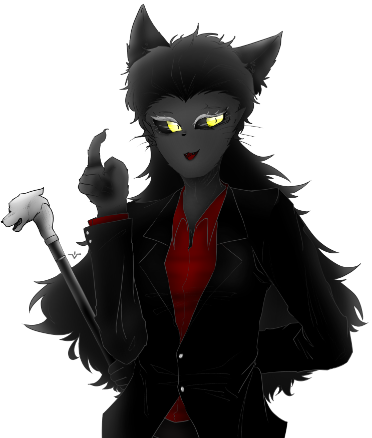

| 프라이드 Pride |
|
|  | |
| 별칭 | 멋들어진 고양이, 슈펜츠 가의 검은 고양이 |
| 나이 | 31세 |
| 종족 | 고양이 수인 |
| Sex / Gender | 여성 / 시스젠더 |
| 직업 | 흥신업자 |
| 키 | 168cm |
| 몸무게 | 58kg |
| 혈액형 | O형 |
| 생일 | 6월 21일 |
FNI
1. 외형
온몸을 휘감은 짧고 검은 털. 머리카락은 피부의 털보다 약간 더 어두운 검은 색이다. 전체적으로 단정하게 뒤로 넘긴 머리이다. 왁스로 눌러
빗어넘겼지만, 곱슬거리는 머리카락은 드문드문 지푸라기 끝 마냥 일어나 있다. 넘겨 누른 윗머리로부터 자연스럽게 삼각형 형태로 늘어뜨려진 머릿칼은
허리 아랫부분까지 내려온다. 정수리로부터 양쪽으로 반 뼘 정도의 거리를 두고 새까만 귀가 튀어나와 있다. 검은 고양이 귀는 소리에 민감하게 반응해
언제나 이리저리로 까딱거리고 있다. 시원하게 드러난 이마 바로 아래에는 밝은 회색으로 샌 눈썹과 함께 커다란 검은 공막이 반대쪽을 비추고 있다.
눈동자는 샛노란 색으로, 정가운데의 고양이 동공이 유독 날카로워보인다. 코 역시 까만 색이며 호기심을 드러낼 때에는 위아래로 작게 움직인다.
작고 호선을 그리는 입가 사이로 날카로운 이빨이 드문드문 보인다. 목은 가는 편이며, 목 울대가 털에 덮혀 잘 드러나지 않는다.
손은 인간 형태의 손과 고양이 형태의 손, 그 중간 정도의 형태이며 정리되지 않은 날카로운 발톱이 툭 튀어나와 있다. 손가락 끝과
손바닥 살짝 아랫부분에는 검은색의 발바닥 젤리가 자리하고 있다. 손에 살집이 없는 편이라 푹신하지는 않지만 말랑하고 부드럽다. 골반에서 꼬리 뼈
부근에서는 털로 감싸인 얇고 긴 꼬리가 튀어나와 자유분방하게 움직인다. 다리 아랫부분과 발은 거의 고양이와 유사한 형태이다. 특징적인 역관절이
튀어나와 있으며, 손의 젤리보다 훨씬 말랑하고 두꺼운 발바닥 젤리가 아래를 지탱하고 있다. 발톱 역시 크고 날카롭게 굽어있다. 전체적으로 팔다리가
쭉 뻣어있으면서도 마른 체형. 온몸의 관절이 유연하고 재빠르게 움직인다.
가장 자주 입는 옷은 버건디 색 셔츠에 정장. 정장 재킷과 바지는 값비싼 맞춤 브랜드 상품이다. 신체적 특징 때문에 신발을 따로
신지 않는 편이지만, 가끔 예의를 차려야 하거나 본가에 갈 때에는 특수 제작된 (역시나)맞춤 브랜드 구두를 신는다. 외출복이 아닌 집에서 편하게
입는 옷으로도 셔츠를 선호한다. 왼쪽 손에는 표범 머리 장식이 끝에 달려있는 검은 지팡이를 쥐고 있다.
2. 성격
[ 자만감 넘치는 ]
자신의 능력과 자기자신 그 자체를 자랑스럽게 여기며 뽐내려는 습성이 있다. 동시에 자연스럽게 남들을
깔보는 시선을 숨기지 못하며, 쉽게 교만해지고는 한다. 가까운 주변인들로부터 '거만하다, 너무 오만하게 행동한다'는 평을 많이 듣는다. 이러한 주체없는 자만심은
오히려 마음 깊은 곳에 자리한 열등감으로부터 생겨난 것일지도 모른다.
" 바로 그 때, 세상에서 가장 멋진 고양이가 나타납니다! "
[ 교활한 ]
말솜씨가 좋으며 잔꾀를 잘 쓴다. 그러한 능력을 이용해 사기를 치거나 주변인들을 오묘하게 선동하는 일도 자주 있다.
또한 원하는 것이 있다면 남의 기분을 맞추기 위해 뺀질대며 아첨하는 간사함도 겸비하였다. 다행히 눈치가 빠른 사람들은 그의 간드러진 말투 뒤에
숨어있는 교활함을 금방 눈치채고 거리를 두게 된다.
" 저런~, 바로 제가 필요한 타이밍 같은데요? "
[ 붙임성 좋은 ]
그러한 모든 부정적인 천성에도 불구하고, 놀라운 사교성과 붙임성 덕분에 사회적인 평판은 그리 낮지 않은
편이다. 말주변이 좋아 이야기를 이끌어가는 능력이 탁월하며, 쉽게 호감을 산다. 오히려 그와 처음 마주하는 사람들에게는 더할 나위 없이 매력적으로
비추어질 때도 있다.
" 사교계에는 꽤 오래 발 담궜다구요~ "
3-1. 호불호
Like : 거의 모든 고양이들, 참치, 교양 등
" 너무 무례한 짓은 하지 말아주시겠나요~? "
Dislike : 예의 없는 고양이, 비, 허례허식 등
" 그치만 물에 젖는 건 모든 고양이분들이 싫어하는 것이잖아요? 너무 놀리지 말아요~ "
교양, 지식, 상식과 같은 것들을 중요시 여기는 반면, 겉으로만 번드레레한 의미없는 허례허식은 좋아하지 않는다. 그것을
빌미로 상대를 깔보는 일도 허다하다. 가장 싫어하는 것은 몸에 걸친 것이 자신의 가치를 증명해준다고 믿는 사교계의 바보들.
말했듯 예의를 중요시 여기지만, 참치를 먹을 때 만큼은 식사 예절이 흔들릴 정도로 참치를 좋아한다. 참치 회, 참치 통조림, 참치
구이... 어떻게 조리해도 정말 좋다는 듯. 정신없이 참치를 먹을 때에 그의 예절을 짚어주면 흔치않게 당황한 모습을 볼 수 있다.
3-2. 취미
클래식 음악을 감상하는 취미가 있다. 주로 피아노로 연주한, 그리고 창조적인 종류의 음악을 즐겨 듣는다. 가장 좋아하는 클래식 음악은 프레데리크 쇼팽의 작품들이다. 음악 감상을 할 때의 분위기 역시 중요시 여기기 때문에, 값이 꽤 나가는 턴테이블과 LP레코드 판을 이용해 감상하고는 한다. 최대한 오래된 레코드 판을 찾기 위해 골동품점을 전전하기도 한다. CD가 LP보다 음질이 뛰어나다는 주장을 매우 싫어한다.
3-3. 직업
평상시에는 잡다한 업무를 돈을 받고 하는, 이른바 흥신소 일을 하고있다. 작게는 잃어버린 동물 찾기부터, 뒷조사나 불법 정보 수집 등
여러가지의 업무를 받아서 한다. 탐정이라고 하기에도 애매하고, 뒷골목의 위법자라고 하기에도 애매한 정도의 일. 갖가지 일을 하며 얻은 정보를
팔기도 한다.
흥신업으로 돈을 많이 벌지는 못하지만 원체 좋은 집안의 자제이다보니 돈으로 문제 겪는 일은 없는 듯. 오히려 흥신소는 취미 겸
하는 잡일에 가깝다.
3-4. 습관
간드러진 목소리로 장황하게 말을 늘어놓을 때에는, 뮤지컬을 하는 듯 과장스러운 몸짓과 톤이 동반된다. 거기에다 말이 많은 편이라, 그가 대화를 주도하게 되면 마치 한 편의 뮤지컬을 보는 것만 같은 착각을 일으킨다. 부드러운 허밍 또한 습관성으로 남아 말꼬리를 잡아 늘여준다.
4. 기타
언제나 평이한 존댓말을 사용한다. 친구라 불리울 정도로 친해진다 하더라도 그에게서 가벼운 반말을 듣기는 힘들다. 절반 정도는 콘셉트, 절반 정도는 어릴 적 집안에서의 예절 교육의 여파이다.
 리베르 - 천진난만하고 귀찮은 친구. 일방적으로 밀어내고 있다.
리베르 - 천진난만하고 귀찮은 친구. 일방적으로 밀어내고 있다.